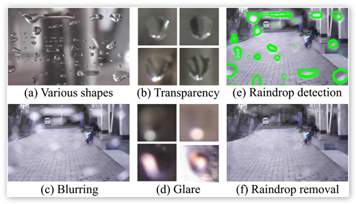

My work is mainly focusing on three areas:
Physics Based Vision
Perception Based Vision and Learning,
3D geometry.
Physics Based Vision

Liquid optics is extremely challenging because it is transparent and non-rigid. The transparency means its appearance is totally determined by its environment. The non-rigidity means its shape is also highly dependent on the environment. Specifically, my research focus on rain and water drops.
Perception Based Vision and Learning

Perceptual based vision learning aiming to model and understanding human perception. And later propose computer vision and machine learning algorithms which incorporates such understanding. Specifically, I have been working on the topics: Prothetic vision, decolourization, saliency and manifold learning.
Non-rigid 3D geometry

A few researches on modeling the non-rigidity of 3D objects.